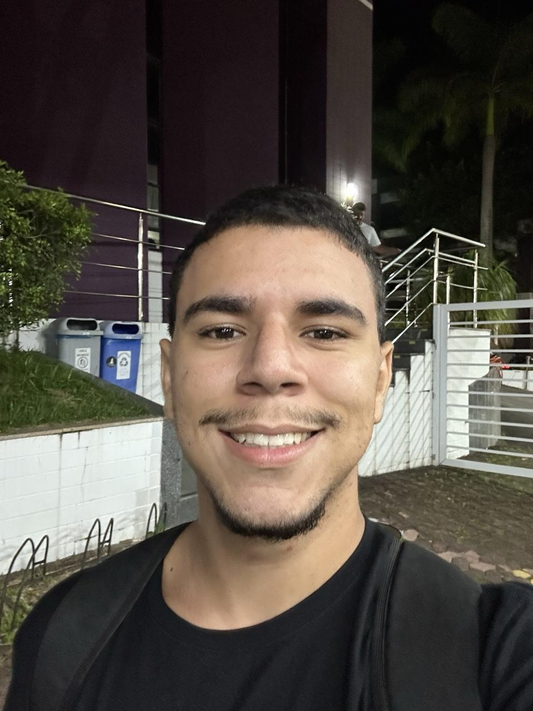

Home | Currículo | GitHub | Serviços | Contato

Meu nome é Gabriel Moreira Marçal, tenho 20 anos de idade, sou canela-verde, nascido e criado em Vila Velha -
ES.
Durante grande parte da minha vida, eu quis ser um jogador de futebol e até cheguei a jogar por dois meses no
Rio Branco (o maior do estado),
mas percebi que a rotina e os treinos estavam prejudicando meus estudos e acabei escolhendo abandonar o sonho
que quase toda criança já teve
para me dedicar inteiramente aos estudos. E valeu a pena, fui selecionado para estudar na melhor turma de todas
as unidades da escola graças
ao meu desmpenho escolar e à minha conduta em sala de aula. Passei a querer cursar medicina, mas percebi que
essa não era minha maior vontade
mas sim passar na Escola Naval e me tornar um Oficial Fuzileiro Naval da Marinha do Brasil. Desde então tenho
estudado e me dedicado à isso.
Se caso não for possível realizar isso que se tornou um sonho, quero atuar na área de tecnologia e provavelmente
trabalhar para empresas no
exterior e, quem sabe, até morar fora ou viver viajando, como um nômade.
Estudei do Infantil até o 8º Ano do EFII no Colégio Americano Batista (hoje conhecido como Colégio Batista Brasil
- Vila Velha), 9º ano e 1º
ano do EM no COBE (hoje conhecido como Elite), 2º ano do EM no UP de Vila Velha e 3º ano do EM no UP de Jardim
da Penha, em Vitória.
Atualmente estou cursando o bacharelado no curso de Sistemas de Informasção na Universidade de Vila Velha
(UVV).
Na faculdade tenho as seguintes matérias:
Já trabalhei por seis meses como garçom em um restaurante local e atualmente trabalho na loja de roupas da minha
mãe.
Como já dito anteriormente, pretendo me tornar um Oficial Fuzileiro Naval da Marinha do Brasil, mas caso isso
não seja
possível, quero ter um emprego na área de tecnologia com uma remuneração boa e liberdade geográfica.
Nunca participei de eventos como feiras, palestras ou congressos.
Eu sou cristão e Vascão, amo futebol, jogar videogame, ir à praia, ouvir música, viajar, estar entre amigos, estar com a família e meus valores são:
"Tudo o que fizerem, seja em palavra, seja em ação, façam-no em nome do Senhor Jesus, dando graças a Deus Pai por meio dele." - Colossenses 3:17